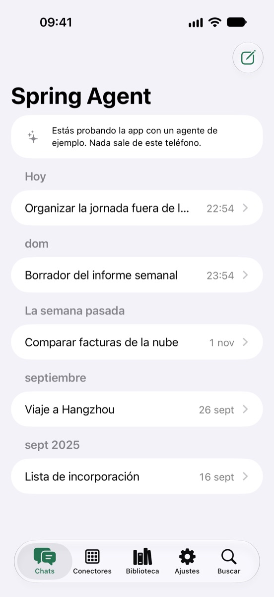
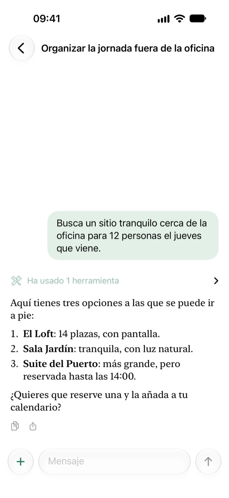
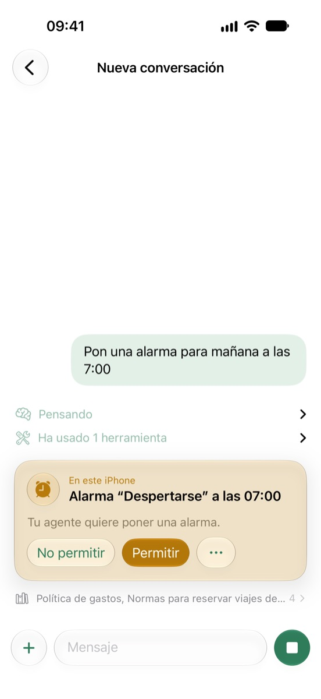
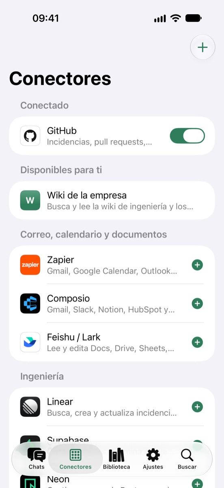
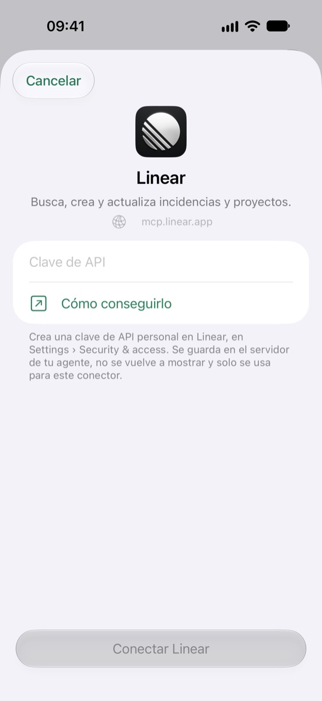
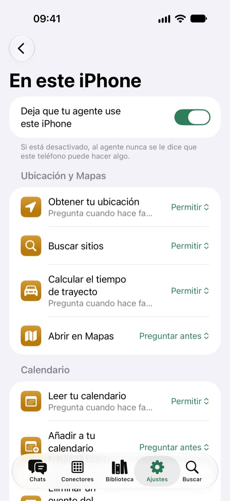
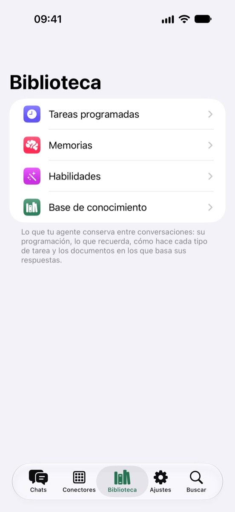
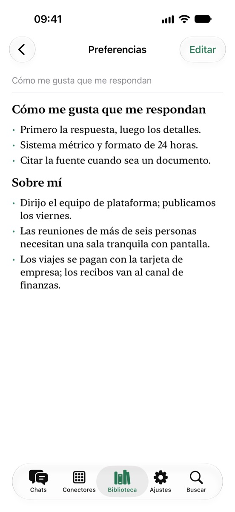

Tu propio agente de IA, en el bolsillo.
Spring Agent es la app para iPhone del agente que tú mismo ejecutas. Chatea con él, sigue cada paso que da y deja que use tu teléfono cuando una tarea lo necesite, siempre con tu permiso.

Spring Agent es la app para iPhone del agente que tú mismo ejecutas. Chatea con él, sigue cada paso que da y deja que use tu teléfono cuando una tarea lo necesite, siempre con tu permiso.

El agente sigue funcionando en tu propio servidor. La app es una ventana hacia él y, cuando una tarea necesita este teléfono, también sus manos.
Respuestas en tiempo real, con el razonamiento del agente, cada herramienta que ha usado y las fuentes que ha leído a un toque.
Ubicación, calendario, recordatorios, alarmas, Salud, contactos y fotos. El agente te pregunta aquí primero, y tú decides, herramienta por herramienta, cuánta libertad tiene para actuar.
Conecta el agente a GitHub, Linear, Stripe, Zapier, Feishu y mucho más mediante MCP, o a cualquier servidor MCP propio.
Tareas programadas, memorias, habilidades y documentos de conocimiento: lo que tu agente conserva entre conversaciones, para leerlo y editarlo.
La app solo se comunica con el servidor en el que inicias sesión. Sin cuenta con nosotros, sin analíticas, sin rastreo.
Un agente de ejemplo integrado muestra todo lo que hace la app, sin salir de tu teléfono.







Hablar con tu agente y dejar que lea tu calendario o tu ubicación es gratis. Con Pro, puede cambiar cosas en este teléfono (alarmas, eventos, recordatorios, registros en Salud, borradores de correos y mensajes) y puedes activar más de tres conectores.
al mes
al año, con una semana de prueba gratuita para nuevos suscriptores
Precios en EE. UU.; el App Store te muestra los de tu país. Las suscripciones se renuevan automáticamente salvo que se cancelen al menos 24 horas antes de que termine el periodo, en Ajustes › Cuenta de Apple › Suscripciones. Consulta las Condiciones de uso.
¿Preguntas, errores o ideas? Abre una incidencia en GitHub o escribe a contact@kezhenxu94.me. Para ejecutar tu propio servidor de agente, empieza por el repositorio de Spring Agent.